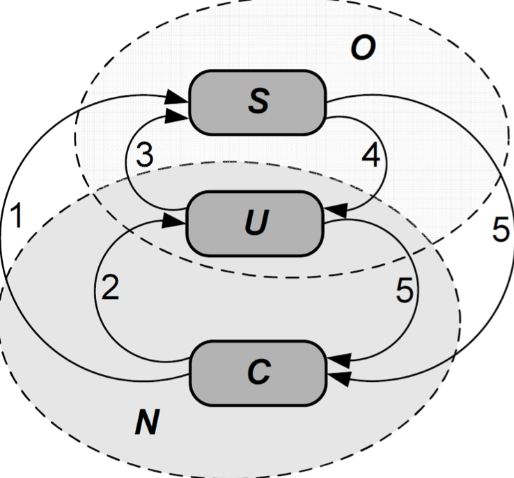
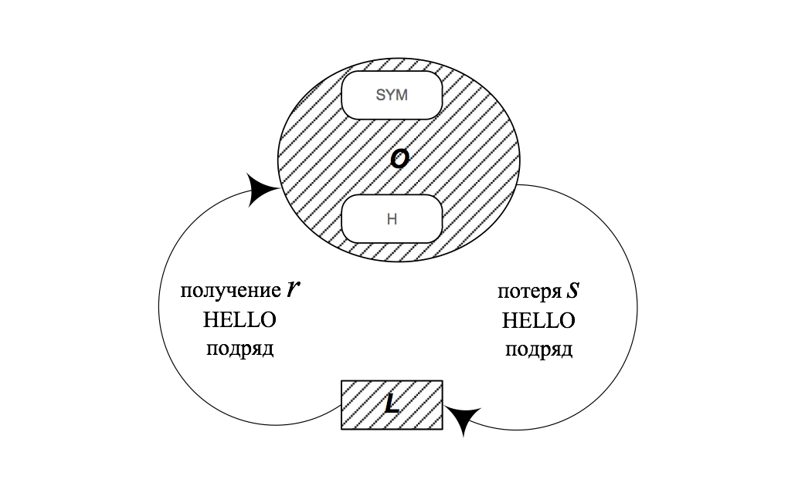
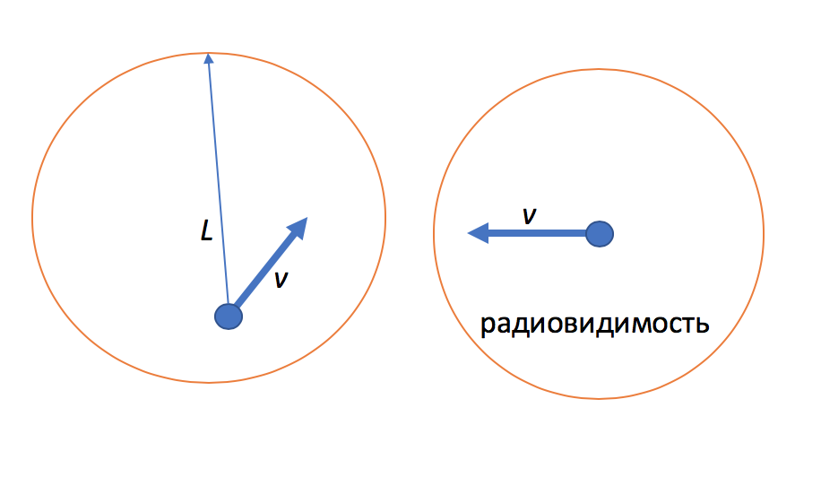

Недостатки NHDP
NHDP открывает соединения по первому полученному HELLO сообщению и закрываем по тайм-ауту. Недостатки:
- Ненадежность (низкая вероятность успешной передачи)
- например получили только 1/3 от hello сообщений
- не удовлетворяет требованию к доле досставленных пакетов из-за ограничения на число попыток передачи
- высокое потребления канальных ресурсов из-за большого числа повторов передачи
- хочется накладывать требования надежности
- Нестабильность (большая флуктуация состояния соединения)
- постоянное изменения состояний узлов после новых сообщений
- возможные ошибки маршрутизации (что-то вроде счетчика до бесконечности, следствие — циклы)
Возможное исправление:
Увеличение объема статистических данных на основании которого принимается решение об открытии соединения
- например наблюдать за параметрами hello сообщений (например уровень сигнала)
- это трудно, тк протокол работает на уровне приложений, нужны драйверы и все такое
- => нужны другие методы
Критерий надежности
Пусть задана некоторая вероятность =
Пусть вероятность успешной доставки =
Если то нужно close, если то нужно Symmetric
Критерий стабильности
Состояние то симметричное то не симметричное
— среднее время жизни линка (логического соединения (когда соединение симметрично))
— среднее время нахождения в Not Sym.
— link fluctuation (колебания)
— интервал обновления топологии (характерный период рассылки сетевой информации)
Сам критерий:
Критерий оперативности
Важно, чтобы (задержка до установки логического соединения) было много меньше (время физического соединения)
Математическая модель
Говорим, что если хотя бы один из критериев не выполняется — у протокола маршрутизации большие проблемы.
Нужно построить математическую модель протокола, чтобы вычислять все эти значения.
Необходимо определить:
— вероятность того, что соединение симметрично
— среднее время когда соединение симметрично
— среднее время когда соединение несимметрично
Упрощаем протокол, с точки зрения модели
Новая диаграмма состояний: (точнее правила перехода)
Важно обратить внимание на состояния и

- Переходы из C в U и из C в S происходит, когда узел получает HELLO подряд от соседа [мб что-то улучшит, дополнительная степень свободы]
(Считаем, что HELLO генерируется строго периодично)
- Переход в C, когда потеряли HELLO подряд. [тупо упрощаем модель]
Критерий Вальда — link
Сумма случайного числа одинаково-распределенных независимых случайных величин
Тождество Вальда
Определение вероятности нахождения в O(C)
Процесс перехода медлу состояними O и C является On-Off процессом
( — средняя длительность состояния X)
Определение средних длительностей состояний O,C

ДЗ 1
( вероятность единицы)
(выводится через формулу Вальда)
1#0001#1#01#01#0000000# (1 получили Hello, 0 потеряли)
Цикл продолжается до первой единицы или до s нулей.
Вероятность того, что длина цикла = s:
Какова средняя длина цикла?
Каково среднее число циклов?
Короче нужно ответить на эти вопросы и вывести формулы выше
Определение вероятности нахождения в состоянии S
Доказать утверждение
ДЗ 2
Подсказка: Состояние симметричное с точки зрения узла X, если оно открыто с точки зрения узла X и в последнем принятом HELLO от узла Y оно было указано как открытое
Доказать утверждение
ДЗ 3
(средняя длительность пересечений — смотреть картинку)
Подсказка:
- Важно знать, что отрезки одинаково распределены
- Считать, что нам известно распределение длины отрезка, оно вконце сократится
- Это классическая задача из тервера
ДЗ 4
Найти среднее вреся в нахождение
Итого: 4 ДЗ
ДЗ 5*
- 5-е дз со * (Среднее время жизни физического соединения)
среднее время движущихся объектов в зоне слышимости

Настройка параметров
Тут что-то говорится про выбор r, s и влияение на разные критерии, проще смотреть слайд.

Что такое здесь — неясно (видимо )